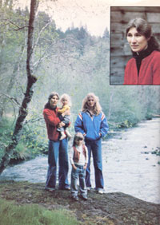

On June 22, 1981 a Chicago federal grand jury indicted four former officials of Industrial Bio-Test Laboratories . . . charging that they had knowingly given the government false information involving the results ofsafety tests run on pesticides and related chemicals. On the basis of the supposedly false reports, the active ingredients of some 218 pesticides were registered by the EPA. Agency investigators have since detected serious deficiencies in the work of some 25 other U.S. laboratories that are responsible for determining the health effects of such substances.
Several of the chemicals whose approval for widespread use may have resulted-at least in part-from questionable testing, have proved to contain dioxins, a group of extremely toxic substances formed in the manufacture ofchlorinated phenols. Of the 75 known dioxins (which cannot be seen, smelled, or sensed in any way), the most poisonous is 2,3,7,8- tetrachlorodibenzo-p-dioxin, commonly known as TCDD. Such herbicides as 2,4,5-trichlorophenoxyacetic acid (2,4,5-T) and Silvex contain traces of the poison.
Agent Orange (a name you're probably familiar with, thanks to the attention given it by the national press) is a 50/50 mix of 2,4,5-T and 2,4-D (a similar phenoxy herbicide), and its extensive use in Vietnam has resulted in thousands of reported health problems . . . ranging from nervous disorders and liver damage to cancer and birth defects. In Texas, for example, out of the first 100 individuals interviewed by the Brotherhood of Vietnam Veterans, 24 had fathered a total of 35 deformed children, including six who died.
Help has not been quick in coming to these ex-soldiers . . . and other herbicide victims-from railroad workers to farm laborers-are finding that government and big business all too often seem inclined to put corporate profits before the health of human beings. Probably the most callous response to the problem occurred in Ashford, Washington, where the toxic effects of 2,4-D allegedly contributed to the fact that only one child out of 12 pregnancies is alive and healthy today. (Of the group, nine women miscarried, one baby was stillborn, and one died of a heart defect after 16 days.) There, a timber company chemist told an assembly of concerned women that "babies are replaceable ," and that they should "plan their pregnancies around the spray schedule ."
Faced with that kind of corporate/government attitude, there would seem to be little that one individual can do. Yet Bonnie Hill-a high school English teacher and the mother of one son and three daughters-found the time, energy, and courage to change the herbicide habitsof our entire country! As a direct resultof her concern over miscarriages in Oregon, the Environmental Protection Agency-on March 1, 1979-declared a temporary suspension of 2,4,5-T and Silvex spraying, an order which is still in effect.
The agency then set out to obtain a permanent ban on the use of the two chemicals, by demonstrating the relationship of the substan ces to a host of health problems. After almost a yearof testimony, however, during which the EPA produced scores of studies and witnesses (including Bonnie Hill), the manufacturer-Dow Chemical-suddenly asked Administrative Law Judge Edward B. Finch to recess the hearing indefinitely. Behind closed doors, the agency and the firm have begun to negotiate a "compromise solution". . . which may result in nothing more than a change in the wording on the herbicide labels!
In order to learn more about the situation, MOTHER staffer Sara Pacher visited Bonnie at her home in Oregon's beautiful Coast Range, where the Hills enjoy what appears to be an almost ideal homestead environment. They're surrounded by undeveloped acreage owned by private companies and other public lands managed by the Bureauof Land Management, and their nearest neighbors are a mile away in one direction and 16 miles in the other. A special breed of colorful chickens decorates the yard, providing meat and eggs . . . as well as feathers for Mr. Hill's trout-fly-tying home business. Inside, homegrown vegetables and local fish and game are prepared on an old wood cookstove, and kerosene lamps provide a gentle light.
As you can imagine, Bonnie's idyllic family life has been drastically affected by the steps she's taken to confront the herbicide sprayers. Hardly any media mention is ever made of the highly political issue without noting how the miscarriages of eight women in Alsea, Oregon resulted in the temporary suspension . . . and just as inevitably, Bonnie is singled out as the opposition spokesperson. That's not a role that this warm, intelligent woman seeks or even likes . . . but we think our readers will recognize Ms. Hill's struggle as a fine example of what one person can do to "change the system," and that they'll be able to learn from-and be inspired by-her experiences.
PLOWBOY: No one will dispute the fact that one person, Bonnie Hill, has almost singlehandedly increased our national awareness of the herbicide-versus-health issue and altered-at least temporarily-the spraying habits of this entire country. Is there, in your background, any education or training that might have prepared you for this struggle?
HILL: My father was an Air Force physician, and my interest in medicine has been substantial. As a high school student, I was a volunteer at Georgetown University Hospital in Washington, D.C., and-after graduation-I attended a nursing school for a couple of years. Eventually, however, I decided to change my major to English and go into teaching. I have also been a grant writer for a group of local citizens who are establishing a primary medical care facility here in Alsea, and I serve on its Board of Directors.
PLOWBOY: How did you happen to settle in this rather remote part of Oregon?
HILL: Well, after leaving college I taught in the Eugene, Oregon school system for a while, and since my husband and I loved the outdoors, we spent much of our free time camping in the mountains. Finally, we made the decision to raise our family in a rural environment, and we chose the Coast Range for our new home because the area's geography holds a great fascination for us. We love the trees and the mountains and the rivers . . . and even all the rain. Some people have trouble adjusting to our "monsoon season", but the regular downpours are so much a part of the area's ecology that we've come to cherish them, too.
PLOWBOY: This certainly seems to be an all but perfect setting for a homestead lifestyle. When did you begin to suspect that something very terrible was going on here?
HILL: Back in the summer of 1977. I was then taking classes at the University of Oregon, and I came across some studies on the research conducted by James Allen of the University of Wisconsin on the effects of TCDD, one of the dioxins found in many herbicides. Allen discovered that a significant number of rhesus monkeys, when exposed to even minute quantities of the substance, suffered spontaneous abortions, or-in common terminology-miscarriages. Now I knew that various herbicides were sprayed on the forests in our immediate area, and I knew also that those substances-particularly 2,4,5-T and Silvex-contained small amounts of TCDD.
PLOWBOY: Isn't it the official position that such quantities are too small to do any harm?
HILL: Well, the Food and Drug Administration has released information indicating that one drop of pure TCDD can kill 1,200 people, and according to many scientists-as well as the EPA itself-there is no safe level of the substance. Virtually every amount that's ever been administered in tests has caused some kind of adverse health effect.
Still, though, in the case of 2,4,5-T and Silvex, we're talking about parts per trillion, and that sounds like such a small quantity that a lot of folks assume, understandably, that we needn't be worried. It's difficult to believe that such an infinitesimal amount could be dangerous . . . and yet it is. Most scientists are in agreement that TCDD is the most toxic substance that's ever been manufactured.
And 2,4,5-T, by the way, is almost an exact replica of an auxin, a growth hormone that occurs naturally in plants and humans. When 2,4,5-T is applied to plants, their cells multiply so rapidly that the shrubs, weeds, and so forth literally grow themselves to death . . . and the biological makeup of plant auxin is very close to that of human auxin!
PLOWBOY: What led you to believe that the herbicides were doing more than causing unwanted plants to grow themselves to death?
HILL: Well, I had a miscarriage in the spring of 1975, and I remembered that a number of former high school students of mine-after graduating and beginning their families-had told me about miscarriages they had suffered. I also recalled that in each case the tragedies had occurred in the springtime, which is the major herbicide spray season around here, of course . . . and the possible connection worried me.
So, from the fall of '77 to the spring of '78, I looked into the problem by visiting my former students and asking about the circumstances surrounding their miscarriages. In the course of our conversations, I learned that other area women had had the same experience . . . and virtually every miscarriage that I heard about had occurred in the spring.
Now please remember that this wasn't something I went off half-cocked about. I wasn't searching specifically for spring miscarriages, but at a certain point I became curious enough about the coincidence to study the herbicide spray patterns in our area . . . to determine who sprayed and when, and to find out if those spray sites were close to the homes of the women who had miscarried. So I telephoned and visited several of the agencies and private industries that use herbicides in Benton County and compiled the information that I gathered into charts and maps.
PLOWBOY: Was it difficult to collect this data?
HILL: Yes, in most cases it was. Government agencies are required, by law, to make information about spraying programs available to the public, but it's not always easy to get the data from them. Nor are such agencies required to notify individuals who live near a spray site. The net effect of the policy is that the district Forest Service ranger station closest to the spray area will usually have a map showing the various to be treated sites, and people can go in and figure out where their homes are in relation to the proposed sprayings. Obviously, doing so takes a little effort on the part of the public, and I think many people-because local citizens work at the station-are hesitant even to go in and get information on such a controversial subject.
Private industry, on the other hand, has no legal obligation whatsoever to the public in this matter . . . the companies don't have to announce any information about their spray plans. However, some firms do have a policy of notifying people who share a property boundary with them. In other words, if our land borders a spray site, a private company might let us know in advance that, sometime within the following week or so, it'll be spraying that particular site. Unfortunately, wind and weather conditions very often make it impossible for a company to pin down an exact date.
Furthermore, many people would prefer to leave their homes while spraying is in progress, even if the treated site isn't directly adjacent to their property . . . since it's well known that sprays can drift for miles. Yet those residents have no way of finding out when herbicides are to be applied.
PLOWBOY: So I take it that the spray data provided you by private industry was incomplete.
HILL: Actually, at one company I had no trouble at all. In fact, when I went to see one of its representatives, he seemed to be genuinely concerned, and even provided me with maps showing the firm's spraying sites. But most weren't so willing to cooperate, and I understand that there are those who-even in the course of the herbicide hearings in Washington, D.C.wouldn't turn over their spray data to the EPA! Of course, one reason for such reluctance might be that industry spray records aren't always very accurate. In fact, people on both sides of the issue agree that they are rather notoriously incomplete.
However, despite the roadblocks I encountered while looking for information, by the spring of 1978 I'd learned of 11 confirmed "spraytime" miscarriages involving eight women, and had also gathered enough spray data to prepare maps showing how close these women's homes were to the treated sites. And the correlations seemed pretty striking.
At that point, since it was obviously impossible for a small group of concerned citizens to gather all the necessary facts, the eight of us decided to seek help from someone who had greater resources than we did, and who could find out whether a real problem existed. At no time, however, did we claim to have established a cause/effect relationship. We just noted that these events-spraying and miscarriages-happened at certain times, and that those times coincided.
PLOWBOY: But didn't the miscarriages you studied occur over a period of years?
HILL: The earliest one happened in '73, and there was one in '75. All the rest were clustered in '76 and '77, which-as it turned out-were both years of significantly increased spray use.
PLOWBOY: And how far along were the pregnancies?
HILL: Most of the women miscarried during the first trimester, which pretty much matches the timing Dr. Allen observed in his research with rhesus monkeys. The two that occurred prior to 1976 were further into the pregnancies, and the industry people will pretty well admit that in those years there was a lot more carelessness in the application of herbicides than there is today.
PLOWBOY: Did you find that the women had anything in common other than the fact that they lived near the spray sites? Have any other causes been proposed for the miscarriages?
HILL: None of the women's doctors had been able to offer any explanation. And these were local women, representing a good cross section of the community. The one other thing we did have in common was that we all obtained a lot of our food from the area . . . including garden-grown vegetables, fruit from our own orchards, and fish and game caught around here. Then, too, the local economy is almost entirely dependent upon the timber industry, and most of the women's husbands were employed by it.
PLOWBOY: When you realized that you needed some help, what course of action did you take?
...the Food and Drug Administration has released information indicating that one drop of pure TCDD can kill 1,200 people, and according to many scientists - as well as the EPA itself - there is no safe level of the substance.
HILL: One of the first things we did was to draft a letter and send it to about 35 legislative and government agencies . . . organizations that we thought might have an interest in our problem. At the time, I was too politically naive to realize that the Environmental Protection Agency was the proper organization-to contact. Of course, eventually the EPA did respond to the situation. Interestingly enough, though, we had already obtained national news coverage by the time the decision was made to help us.
PLOWBOY: Do you think that exposure contributed to the government's decision to offer aid?
HILL? To say so would be purely speculation. I guess we'll never really know.
PLOWBOY: Were you surprised by the amount of media response you received?
HILL: I was amazed! I'd anticipated that we might draw an investigative reporter or two, but when the first TV crew showed up, for instance, I was floored!
PLOWBOY: When the EPA came into the picture, what exactly did it do?
HILL: Well, the agency's involvement developed in stages. First, two people from the University of Colorado-both of whom were under contract to the EPA-simply met with me, two other women, the county health officer, and a teacher from the school . . . and we passed along the information that we'd gathered. They decided, after several hours of conversation, that the situation should be investigated and returned two weeks later with 17-page questionnaires, which the eight women who signed the letter were asked to complete.
Now we were really hoping that the process wouldn't end right there and that the government would go on to take an extended look at the whole community. We knew that the EPA could prove nothing by giving us these questionnaires, since all of our miscarriages had occurred years before.
At any rate, this all took place in August 1978, and we didn't hear a thing until December. Finally, someone outside the agency sent us the informal statement that has since been called "Phase One of the Alsea Study". It indicated that the EPP hadn't found any definitive cause/effect relationship, but went on to say that a broader study should be undertaken.
PLOWBOY: Because, I presume, there's no easy explanation for the "miscarriage season" exposed by your research.
HILL: Right. Just as births occur fairly evenly throughout the year, so should miscarriages. However, the people who reviewed the Phase One study also concluded that there was no evidence of a "miscarriage epidemic" . . . which, since our data concerned only eight women, there wouldn't be. Furthermore, the EPA had supplied the reviewers with some statistics upon which to base a conclusion, but all of those figures related to either the state or the county. The reviewers were never told that Alsea constitutes less than 2% of Benton County's population, so no epidemic in Alsea would be reflected in county-wide figures. We know now, though, of some 34 miscarriages that occurred in this area over the same period of time.
PLOWBOY: Thirty-four!
HILL: Yes . . . and again, the miscarriages followed a seasonal pattern. What's more, the real total may well be even higher: Those that we included on our list had all been medically verified . . . and that qualification itself is limiting, because many women don't even see a doctor when they miscarry. It usually happens early in the pregnancy, and often at home with no complications. We've heard about a great many more that were- never medically verified, but I didn't even mention those in my testimony to the EPA, because I knew they'd be challenged as "hearsay" or "hysteria".
PLOWBOY: I assume, then, that you weren't really satisfied with Phase One of the Alsea Study.
HILL: No, because at that point we had no way of knowing that the EPA was planning to take a look at the relationship between spraying and miscarriage among the broader population . . . which was the main thing we were interested in. The first indication we had that the agency had actually done so was when it announced the temporary suspension of the use of 2,4,5-T and Silvex. That decision took us completely by surprise.
PLOWBOY: But did the suspension really put a stop to herbicide spraying?
HILL: No, it didn't. In fact, people were later shocked to learn that the EPA was still allowing the use of 2,4-D, which is chemically in the same class-a phenoxy herbicide-as 2,4,5-T. Many area residents were disappointed that the agency chose to separate the two substances since they had always been sprayed together. How could the EPA assume that it was one and not the other?
Of course, when the EPA did announce the temporary suspension, everyone found out that it had extended the study to include a 1,600-square-mile area that went from the coast of Oregon inland for about 35 miles. And the investigators had found, in the larger study area, the same correlation between a high incidence of miscarriage and the spray season as had been indicated by our local research!
Unfortunately, this "Phase Two of the Alsea Study" examined only hospital records to get miscarriage data, and we tried to point out again and again how important it would be to consult doctors' records . . . after all, of the original 11 miscarriages that we'd looked into, only two had been treated in the hospital. So though the EPA did find an increased incidence of miscarriage in the general population, its research was barely scratching the surface.
PLOWBOY: Yet even that produced results startling enough to get a suspension.
HILL: Yes, and the Environmental Protection Agency has been criticized, in many quarters, for that decision. The chemical companies and users of herbicides accuse the agency of being rash and hasty. But in spite of the faults in the design of the study, I think you have to realize thatconsidering what it was up against-the EPA made a responsible decision. The agency, at that time, was faced with the approach of the yearly spray season. Four million people in the country were in potential exposure situations. Furthermore, there was a preponderance of laboratory data to indicate that even inconceivably minute quantities of TCDD caused adverse health effects in animals. And the new research showed the same effects appearing in human populations. I understand that the EPA has never had such solid, definitive laboratory evidence before on the clear hazards of any other chemical.
In addition, although use had no idea of this at the time, the EPA's files were full of letters and reports from people all over the world noting the same correlation, mostly on a personal level. Many individuals had written in to say, "They've sprayed in my area, and this is what happened to me." The reports had been coming in for a long, long time.
PLOWBOY: But haven't the media led most people to believe that the suspension was based solely on the eight Alsea cases?
HILL: I don't know who's responsible for that widespread fallacy. There was, as you know, a lot of other information considered by the EPA, but I'm afraid that many Oregonians, and probably people all over the nation, think that only eight women's experiences were considered . . . which is just absurd!
Now I'd have to be the first to admit that there's been no definite cause/effect relationship established. It's absolutely impossible to prove that 2,4,5-T has caused a particular miscarriage . . . there are too many other variables involved. But I've yet to see any other explanation of the striking correlation between the incidence of miscarriage and the spray season.
PLOWBOY: Assuming there are plenty of reasons to at least suspect a cause/effect relationship, what are your personal suspicions as to how dioxins might enter people's systems?
HILL: I think there are a number of pretty obvious avenues of exposure. First, the geography of this area has to be a real contributing factor. The Coast Range is made up of hills with very, very steep slopes and has about 80 inches of rain each year. Most of that precipitation occurs in the fall, winter, and-particularly-spring months, when spraying is done. And because of this heavy rainfall, the whole region is absolutely interlaced with streams, which range from tiny rivulets just a few inches wide to fullfledged rivers. You can barely walk 50 yards without having to cross at least a couple of waterways.
Interestingly enough, the warning labels on 2,4,5-T and 2,4-D point out that the substances mustn't be sprayed into water. Herbicide users are supposed to be held legally responsible for observing label precautions . . . abut apparently little attention is paid to that regulation, since it'd be virtually impossible to spray herbicides aerially in this region and not be over water! And that's very sad, because many people in the Coast Range draw their drinking water directly from springs and streams, and-until recently-these have been very pure, clear, clean sources.
PLOWBOY: Has the local water been tested for dioxins?
HILL: It has, and several examples of contamination have been discovered. When the EPA announced the suspension, it released a document that detailed some of its reasons for stopping the use of the banned substances, and in that report the agency maintained that sprayed 2,4,5-T has been known to drift as far as 22 miles. That's a long way! [EDITOR'S NOTE: In Washington state, airborne 2,4,5-D blown from as far away as 200 miles has actually caused damage to grape, crops.]
I've also found a study conducted by the southern Oregon Bureau of Land Management that serves to underscore the danger of aerial spraying. Despite the fact that every precaution was taken to apply the herbicides as safely as possible, it was discovered that the chemicals entered local waterways 70% of the time.
Furthermore, the EPA has found dioxins in the sediment of the stream from which one of the women who had had a miscarriage draws her water. The agency's staffers took water samples from all of our homes . . . which-at the time-we thought was rather ridiculous. My miscarriage, for example, had occurred in 1975, and there the agents were, taking water from our stream in the spring of 1979. But those tests-despite being done so much after the fact-did reveal dioxins in at least this one instance. That woman, by the way, had two miscarriages, and her four-year-old son has had a most incredible history of illnesses . . . particularly respiratory problems.
So, we're faced with wind drift, water contamination, and additionally the bioaccumulation of dioxins in the food chain. EPA investigators have found TODD in elk and deer taken from Oregon's Coast Range.
I'm also concerned that so little attention has been given to the whole question of men's, as well as women's, exposure. In Idaho, for example, a series of chromosome tests performed on applicators of herbicides and pesticides-before, during, and after the spraying season-showed a significant chromosome breakage while spraying was underway. Of course, herbicide proponents point out that eventually such harm repairs itself. But if a conception were to occur during the time when there was chromosome damage, that factor could certainly contribute to the termination of the pregnancy. Could it also help cause birth defects? I don't know.
PLOWBOY: Is there any evidence of an increase in birth defects in the sprayed areas?
HILL: I haven't gathered data about that . . . and, of course, it's a pretty sensitive topic, because the feelings of the parents have to be considered. I might mention, though, that in Lincoln County-which was part of the EPA study area-the local medical society sponsored an initiative to restrict the use of phenoxy herbicides (and this was after the suspension, so they were mostly addressing 2,4-D) because they had found an unusually high number of neural tube defects among the babies in that forested area. The action appears all the more significant when you consider how rare it is for doctors to take this kind of position at all. They just don't do such things very often.
Then, of course, there's the problem of TCDD buildup in the soil . . . and, finally, unanswered questions concerning the effect of burning sprayed areas.
PLOWBOY: Is that a pretty common practice?
HILL: Herbicides are applied for a variety of reasons, one of which is to prepare an area for planting. In such a case, the landowners will come in and spray the foliage . . . wait for it to die down . . . and then burn it. And there's evidence that increased dioxins are formed in the burning process. Here, particularly in the fall, a substantial number of acres are burned over every year, so there's smoke in the air all around through much of the autumn. And when we analyzed the total 34 miscarriages, it became clear that there was a second clustering of miscarriages in the fall!
PLOWBOY: Hasn't the chemical industry countered much of your evidence by pointing out that dioxins brea k down very rapidly in sunlight?
HILL: The claim is that the substances disappear from foliage within six hours if sunlight is present, but there are a couple of problems with that conclusion. For one thing, the tests that produced those results were done on very broad-leaved plants in California, where there's lots of sunlight. Oregon's Coast Range is not sunny in the spring. You also have to understand how very dense the foliage is around here. It's impossible to predict the behavior of an herbicide in this thick forest on the basis of experiments conducted using a single layer of leave spread in the sun!
Another thing that concerns me is that the controversy has pretty much been limited to forestry applications, and has ignored the fact that the same chemicals are commonly used along highways here. Roadside weeds were sprayed with Silvex year after year. The EPA didn't even consider that-or railroad and powerline right-of-way spraying-until I testified, and I was one of the last witnesses in the risk case. The agency had no data whatsoever on such usage, and those sprayings should be considered, since they're often very close to people's homes and water supplies.
PLOWBOY: Urban use of herbicides is usually overlooked, too.
HILL: You're right. In fact, I was amazed when I first learned how commonly pesticides and herbicides are used in urban areas They're sprayed in city parks, on lawns, and in school playgrounds . . . even on bodies of water, to take care of aquatic plants and mosquito larvae. Treatments of this sort are often performed during the night and very early morning hours, when there aren't many people around. Now such a schedule is logical and necessary to safety, no doubt . . . but it also insures that few residents will be aware that spraying is going on.
There's also a lot of private herbicide use. For example, 2,4,5-T was-until recently-contained in many products sold for home gardens and lawns. Furthermore, I've only lately become aware of the problem of residues on food, and that's certainly something that could affect us all. Silvex-its commercial name was Stop-Drop-used to be sprayed on apples night before the harvest to keep the fruit from falling off the trees until it could be picked. And even under the suspension, 2,4,5-T can be used on some food crops: It's allowed on ricelands, sugar cane fields, orchards, and rangeland.
PLOWBOY: It must be very discouraging to move to the country in search of a clean and healthful environment, only to find that you're being exposed to the most toxic substance ever produced.
HILL: It is. Yet it seems difficult for industry people to understand that we have a genuine concern about our health and that of our community. I don't know why it's so hard for them to grasp . . . but it is. They keep implying that we have other motivations.
PLOWBOY: Have you personally run into such attacks?
HILL: Yes, I have . . . and they've often been pretty difficult rill to deal with. Various agrichemical (I don't know what else to call them) and lobbying groups have the ear of the press, and-yes-they've tried to place certain labels on people who raise questions about the safety of herbicides. And naturally, since I've been one of the individuals most visible in this whole issue, when they classify us as drug-crazed hippies, hysterical women, and left-wing-fringe elements, I tend to take it in a personal way. It's disturbing to see such judgments applied to groups of people who, I know, are made up of a broad range of citizens from all different walks of life.
The pro-herbicide interests have also claimed, on several occasions, that those of us who are concerned about the use of toxic substances are either growing marijuana ourselves and making tremendous amounts of money by doing so, or are being paid off by people who raise it. That sort of accusation is ludicrous, but I find it really disturbing even to see such tactics employed.
PLOWBOY: Aren't a lot of the people who are attacking you supposedly paid by the herbicide industry?
HILL: Oh, yes! I don't think there's much doubt about that. A group of Oregon women traveled back to Washington, D.C. after the cancellation hearings . . . to lobby, to visit senators and congressmen and women, and to present the pro-herbicide point of view. I asked one of them how they were funded, and she said they'd received money from the industry.
PLOWBOY: While you're just a bunch of ordinary people ....
HILL: Yes, we are, and we're operating under incredible financial strain . . . a lot of the money has come out of our own pockets. By way of contrast, the members of the main pro-herbicide/pro-pesticide organization in Oregon right now (they call themselves "Oregonians for Food and Shelter") have, I believe, a budget of $300,000 a year, and they employ a full-time attorney. At this time, they're sponsoring an extensive series of paid radio advertisements. One of their main thrusts is to emphasize how dependent the nation is on the use of artificial chemicals: They claim that, without such substances, we wouldn't be able to feed the world or even to take care of ourselves, and our economy would backslide even further than it's doing right now . . . points which raise some very touchy and emotional issues around here.
PLOWBOY: Yet the same group accuses you of being emotional, hysterical women!
HILL: We're also often portrayed as being totally against the timber industry and the farmers, and nothing could be further from the truth. I just don't think some of the tools that people in those occupations have chosen to use are necessary or even advisable. I spoke at a tri-county meeting of Oregon Women for Agriculture to try to explain our point of view and come to a better understanding of their problems . . . and I wish more of that sort of exchange could go on, because I think I was able to make them realize at least that we are sincere in the questions we're raising, and that we have good, solid, scientifically based reasons for our position.
But ever since the petrochemical age arrived, which was pretty much right after World War II-and all these substances started being concocted and pushed on the consumerthere seems to have developed an almost fossilized mind set about the approach to forestry and agriculture.
PLOWBOY: Why do you suppose this has happened?
HILL: Well, some people really seem to feel morally or ethically threatened, as though by taking a look at alternatives they'll be admitting they've done something wrong. I don't think anyone is necessarily making moral judgments here, though. We've made mistakes, and we're just now waking up to those mistakes. It's silly to try to assign blame. It's just that maybe we should see that the established way of doing things isn't working so well, and look into what other methods are available.
I attended a slide presentation given by a Dow Chemical representative about a year ago, and in his discussion of farming without industrial chemicals, he flashed a picture of an ox and plow on the screen, implying that we'd be negating all the progress that's been made in agriculture in recent years by not using those chemical aids. In reality, of course, integrated pest management-for example-is a much more highly sophisticated approach to farming and forestry than are short-sighted chemical approaches.
PLOWBOY: If no herbicides at all were used in this area, how much do you think the economy would actually be affected?
HILL: First of all, I've never taken the position that we shouldn't use any kind of chemical assistance. It's possible that some substances, under some conditions, might be necessary-or at least economically and ecologically practical-but I'd prefer that a close look be taken at each one before it's applied.
When discussing the economics of curtailed spraying, though, you must realize that there have been serious questions raised about whether these herbicides are even doing what they're supposed to do. It seems that forestry people have-over the years-just assumed that the things were working . . . that they were speeding up the growth cycle of trees by about 20 years. But there's no way to validate that claim, since we haven't seen a complete cycle yet. On the other hand, there's a lot of evidence that, in fact, these herbicides are actually harming the conifers instead of benefiting them.
Timing, you see, is crucial in applying these substances. The idea is to kill off the brush, mainly alder trees, that industry scientists claim are competing with the fir trees for nutrients, sunlight, and moisture. Alders bud earlier than firs, so herbicides must be applied when the alder trees are budding but before the fir trees start. If the spraying is too late, it will damage the budding conifers . . . and, in fact, that very often does happen. This part of the case-the "benefit section"-is what is being cut off now by the hearing recess in Washington, D.C. If 2,4,5-T is brought back without hearing the economic justification for it (or lack of it) then the whole system is bankrupt, because the EPA is supposed to weigh risks versus benefits.
PLOWBOY: Isn't it also true that alders are necessary to the growth of conifers?
HILL: Yes, somehow the lumber industry scientists have failed to consider the valuable roles that all trees play in the ecology of the forests. Fir trees can't fix their own nitrogen . . . but the alders can do it for them. They exist together just as do, say, corn and beans in a companion-planted vegetable garden. So if the alders are destroyed, the fir trees will later have to be given petrochemical-based supplements, which would add a hidden cost to the spraying programs . . . one that's never calculated in the figures provided to the public.
PLOWBOY: To get back to the subject of individual involvement: You said eight women signed the original letter that started the whole suspension process, yet the rest apparently haven't taken as active a role in the ongoing struggle as you have.
HILL: No, they haven't . . . initially, I think those of our group who were born and raised here were pretty fearful of community reaction. All of us were really uncomfortable about being in the public eye, but I believe the other women were even more bothered than I was.
However, when we first began looking into this whole question, even I had no intention of staying involved for any length of time. But as events unfolded, it became clear to me that people who live in a situation where they themselves are exposed to this sort of danger have some critical insights that are just overlooked by people who come in from the outside. I never did feel complete confidence in anybody who analyzed the situation. I never saw evidence that the investigators were approaching it in a complete, competent, professional manner . . . so it seemed necessary to maintain my involvement simply to help point out the problems that arose (not that our suggestions wer e necessarily incorporated into the process).
In the beginning, my interest in the whole issue was somewhat narrow. I was looking only at this community and what happened here. I remember one of the first reporters who interviewed me asked if I'd continue to be involved in environmental issues after this fight was over, and I said, "Probably not." After all, bucking a large system does take an incredible amount of time and energy, and it makes demands on a person's family, too. But as I've learned more about this issue and come to recognize that it affects everybody in the country, the dimensions of the problem have grown in my mind, and I've just wanted to stay involved.
PLOWBOY: That being so, what have you learned from this whole experience that could help other people in similar circumstances?
HILL: To answer your question, I feel I need to back up to the beginning . . . to the point at which someone first suspects that he or she is being exposed to a potentially harmful substance. Men and women don't often connect an event that happens in their environment to something that's going on in their bodies. The symptoms of herbicide poisoning, of course, will vary . . . but some of the common, immediate effects are dizziness, nausea, rashes of various kinds, and flu-like symptoms. There are also possible long-term effects-including cancer-which remain to be proved.
But ever since the petrochemical age arrived . . . there seems to have developed an almost fossilized mind set about the approach to forestry and agriculture.
You have to remember, though, that it's extremely difficult to establish a connection between health problems and exposure to an environmentally applied toxic substance. I hate to be pessimistic-after all, I don't want to discourage people from checking such problems out, because that's the only way we're ever going to prove anything-but there are only four laboratories in the country, for example, that can test for low levels of TODD, and it costs anywhere from $1,300 to $1,500 to get samples analyzed! And by the time an individual decided to spend that sort of money, it's possible that the substance would no longer be found in his or her body.
Also, it's likely that 99.5% of the doctors in this country couldn't identify the symptoms of exposure to toxic substances. So when people go in with problems that may be connected with pesticide poisoning especially since the patients themselves often don't have any idea that they've been exposed-doctors are rarely going to question environmental factors. And even when people have been able to show the presence of these substances in the bloodstream, the chemical companies haven't accepted that evidence as proof of their responsibility.
There's an example of a woman who lived in Allegheny, Oregon, whose water supply came from a reservoir that people saw being sprayed with Silvex. The chemical was found in her daughter's blood, and the girl later came down with a rare blood disease. The experience has been traumatic for the family and has cost them enormous amounts of money. The mother is in litigation right now, but the chemical company claims there's no proof that its product caused the illness.
Of course, legally, the manufacturers of these substances are supposed to be responsible for proving their safe use. But the situation has gotten twisted around to the point where we're required to prove definitively that we've suffered adverse health effects as a direct result of the herbicides . . . which is almost impossible. And whenever somebody comes close to winning a court case, the chemical firms settle out of court . . . with a stipulation that the victim isn't supposed to talk about it or reveal the amount of money he or she has received. Thus, the company involved can continue to say that there's been no proven ill-health effect from the chemicals.
PLOWBOY: But let's say that people are fairly sure a harmful substance is being used in their local environment. What steps should they take?
HILL: I guess the first thing I'd suggest is that individuals and families keep accurate calendar records of any and all symptoms and illnesses, even if they're seemingly unrelated to spraying or what have you. Second, whenever it's possible, get those illnesses and symptoms verified by a physician or other health care professional.
Then note the date of any nearby operation which may involve the use of a toxic substance . . . and follow up with calls to users for specific information: Find out what the substance was . . . how much was used . . . and any other details you can gather. If the firm or agency isn't cooperative, call your public health service, legislator, media person . . . or whoever you think might help you get the appropriate data. It would also be a good idea to contact the Northwest Coalition for Alternatives to Pesticides-or a similar organization in your area-to find out what kind of procedures you might follow for sampling and documentation.
Always remember, too, that such problems don't affect just an individual or a family, but can often do community-wide damage. I'd suggest that concerned towns or neighborhoods choose individuals who are known to be fair and objective to collect and maintain records of health problems from the families in the area . . . and from that point on to maintain contact with any agencies and organizations that can provide information about the toxicology and modes of action of the involved substances. Finally, appoint someone, or a group of people, to provide a liaison between the community, the public health agency, the industries involved, and the EPA.
PLOWBOY: In reading the transcript of your testimony prepared for the Forest Subcommittee of the U.S. House of Representatives, I was impressed by the logical, unemotional nature of the presentation.
HILL: When people become interested in environmental issues and find out that things don't always work the way we've been raised to believe they should, it's easy for them to feel angry and frustrated. And since such problems can often affect the health of ourselves and our children, they're bound to play on the emotions. But I think that those who are involved in this sort of struggle need to be really careful about when and where they choose to vent their emotions. One of the favorite strategies of pro-pesticide/pro-herbicide people is to accuse their opponents of being emotional and hysterical.
Now anger and outrage are genuine feelings, and I'm not suggesting that people try to squelch them. What I am saying is that maybe some places are better suited to that expression than are others. If you're in a public situation and are trying to convince people that [a] there's a problem and [b] they should do something about it, I think it's best to provide whatever facts you can and to stay as rational and as calm as possible. To me, doing so makes all the difference in the world.
In addition, I'd recommend that people never underestimate the amount of public support that there is for their position. I spent a long time wondering how my neighbors viewed my stand . . . and it's important to me what people in my own community think of me. And though I never once felt any negative or unpleasant feedback, I wasn't sure whether that was just because of my personal relationships with those people or whether it also implied support for me on this particular issue.
I didn't have an answer to that until this past spring, when the Forest Service office near us announced plans to triple its use of 2,4-D in this area this year. In response, I drafted a letter outlining my reasons for objecting to the spray plan, substantiating each with facts and studies. I circulated this letter at a community basketball game, and I was just overwhelmed at the support from an amazingly broad cross section of the community . . . the variety was just astounding! I realized then that, despite all the local political and economic overtones, most of my neighbors were together on this issue.
PLOWBOY: Yet don't the political and economic factors keep a lot of people from becoming involved?
HILL: I hope such men and women will come to realize that a tough situation gets easier when a group can be relied on to share the responsibilities. But I guess if a person elects to sit back and not get involved, that's certainly his or her choice, and I must respect it.
Nevertheless, those who simply step aside ought to recognize that the decisions being made will affect their lives, their own health, and the health of their children and community. Some body has to speak out!
PLOWBOY: Well, the fight's certainly not over, and you're probably going to be in its forefront in Oregon-and maybe nationwide-for years to come. Have you regretted getting involved?
HILL: Many times . . . especially during the hard days when the attack was really on. In the long run, though, I don't regret a thing. It's been an incredible experience. I've learned a great deal about all the environmental and political processes that are interwoven in the herbicide/pesticide issue. Furthermore, just meeting so many different people from other parts of the country has been invaluable to me. I wouldn't trade any of it for a life of peaceful noninvolvement!
|
 STAFF PHOTO |
|
|